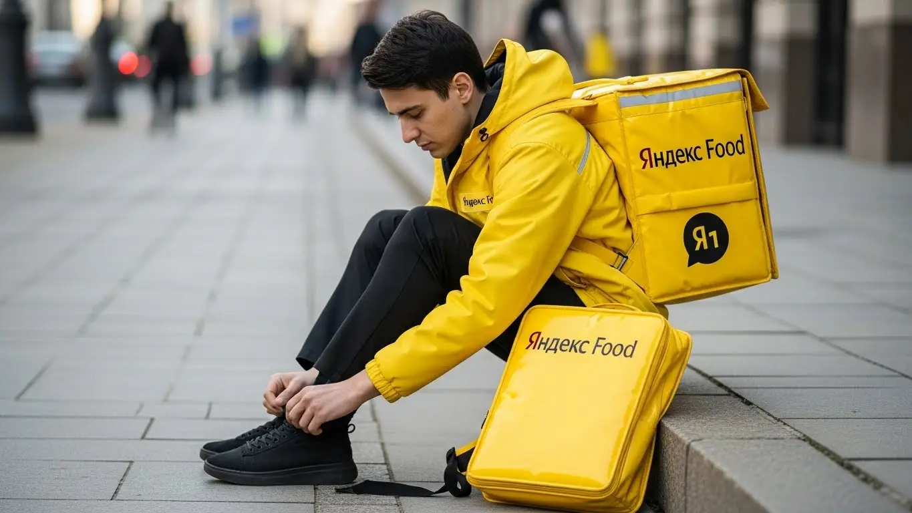
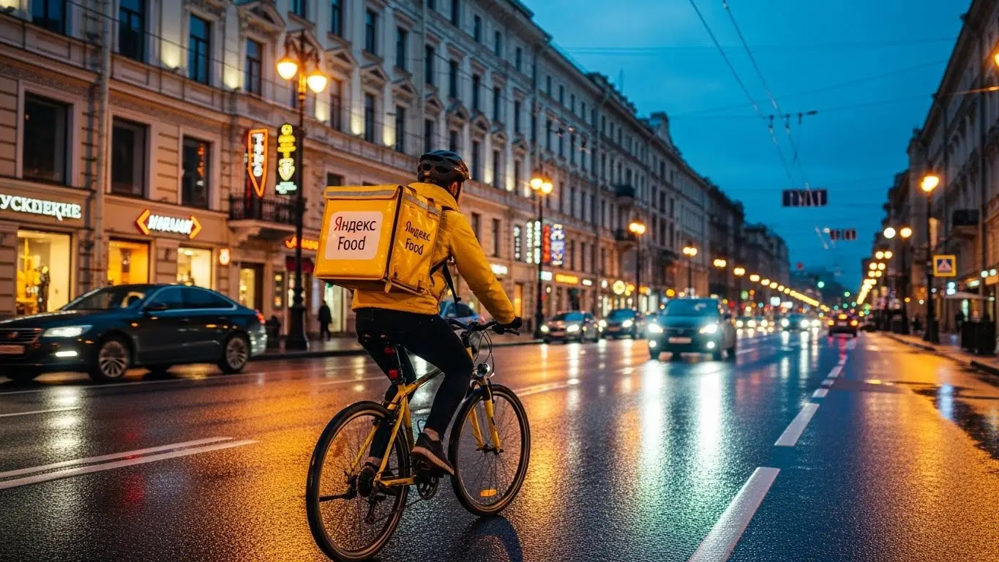

Работа курьером Яндекс Еды в Дмитрове 2025-2026: доход и условия
- Работа курьером Яндекс Еды в Дмитрове: для кого эта вакансия и что вы получите
- Сколько вы будете зарабатывать курьером в Дмитрове: калькулятор дохода и разбор выплат
- Реальный заработок курьера в Дмитрове: смены и месячный доход
- График работы и форматы занятости
- Требования к кандидату и документы
- Самозанятость, налоги и юридическая чистота
- Пошаговое оформление и первый выход на линию в Дмитрове
- Пешком, на вело или на авто: что выгоднее в Дмитрове
- Районы, маршруты и «топовые» зоны заказов в Дмитрове
- Безопасность, страховка, штрафы и оплата простоя
- Плюсы и возможные минусы работы курьером в Дмитрове
- Реальные истории и отзывы курьеров из Дмитрова
- Ответы на главные вопросы о работе курьером Яндекс Еды в Дмитрове
- Короткие ответы на главные вопросы
- Заключение: твой следующий шаг в Дмитрове
Все города
Здорово, друг. Ищешь, где поднять денег, и глаз упал на жёлтый рюкзак? Понимаю. Но давай честно: тебя же гложут сомнения. А не убьёшь ли ты свою машину или велик на дмитровских дорогах? Не будешь ли часами стоять в пробках на Профессиональной, чтобы доставить заказ за копейки? И не обложат ли тебя штрафами за каждую мелочь? Я здесь, чтобы рассказать, как на самом деле устроена работа курьером Яндекс Еда в Дмитрове, а не в какой-нибудь далёкой Москве. Без сказок про золотые горы, только факты.
Поверить рекламе про «свободный график и высокий доход» — это полдела. А вот заранее понять, сколько из этих денег съедят налоги, бензин или ремонт велика, как работает система приоритета и почему в мкр. Махалина заказов густо, а в районе Космонавтов — пусто, это уже совсем другая история. Большинство новичков у нас в городе наступают на одни и те же грабли: катаются в «мёртвые» часы, не знают, где ловить пиковый спрос после закрытия ТЦ «Дмитровский», и в итоге разочаровываются через месяц. Чтобы избежать этого, стоит заранее изучить все детали. Актуальные условия, калькулятор дохода и форма для быстрой онлайн-заявки всегда доступны на странице работа курьером Яндекс Еда в Дмитрове.
В этом гиде я разложу всё по полкам. Мы честно посчитаем, сколько можно заработать пешком, на велосипеде и на машине в наших дмитровских реалиях. Я покажу на карте самые «хлебные» районы и те, куда лучше не соваться в час пик. Разберём, как погода и праздники влияют на заработок, за что реально штрафуют и как этого избежать. И, конечно, выясним, стоит ли вообще игра свеч или лучше посмотреть в сторону других сервисов доставки, которые работают у нас в городе.
Меня зовут Алексей. Я сам не один год откатал с жёлтым рюкзаком по Дмитрову, а сейчас у меня свой небольшой таксопарк-партнёр, так что я знаю эту кухню изнутри — и со стороны курьера, и со стороны «парка». Никакой рекламной шелухи, только реальный опыт. Готов? Тогда давай по порядку, сейчас всё разложу. Начнём с самого главного — с денег.
Чтобы тебе было проще сориентироваться, дальше будет краткий гид по ключевым темам статьи.
Что ты точно узнаешь из этого разбора по Дмитрову
В этой статье ты ТОЧНО узнаешь:
- Сколько реально заработать за смену в Дмитрове пешком, на велосипеде и на авто, и от чего зависит итоговая сумма?
- В каких районах Дмитрова больше всего заказов и как ловить «фиолетовые зоны» с повышенной оплатой?
- Как правильно выбирать слоты и время для работы, чтобы не сидеть без заказов и зарабатывать больше?
- За что на самом деле штрафуют в Яндекс Еде и как бесплатная страховка защищает тебя на смене?
- Что такое самозанятость, как её оформить за 10 минут и сколько налогов придётся платить?
А если тебе некогда читать всю статью — переходи сразу к заключению, где ты найдёшь короткие ответы на все эти вопросы и указания, в каких разделах искать подробности.
А для наглядности — вот основные цифры и факты в одной картинке.
Ключевые цифры: курьер Яндекс Еды в Дмитрове
Работа курьером Яндекс Еды в Дмитрове: для кого эта вакансия и что вы получите
Эта работа — не про жёсткий график и душный офис. В Дмитрове курьерская доставка стала отличным вариантом для тех, кто ценит свободный график и хочет видеть заработанные деньги сразу благодаря ежедневным выплатам. Здесь ты сам себе начальник: решаешь, когда и сколько работать, какой транспорт использовать и в каком районе города брать заказы. Это возможность превратить знание своего города в реальный доход.
Для многих это стало основным источником заработка, а для кого-то — удобной подработкой. Главное — понять, как система работает изнутри, и использовать все её возможности. В Дмитрове, с его смешанной застройкой — от исторического центра до новых микрорайонов — есть своя специфика, и я помогу в ней разобраться.

Кому подойдёт эта работа в Дмитрове
Давай начистоту: эта работа подходит многим, если есть желание двигаться и зарабатывать. Во-первых, это идеальный вариант для студентов. График можно легко подстроить под учёбу: выходить на пару часов после пар или плотно работать на выходных. Деньги приходят быстро, что для молодого парня или девушки всегда актуально.
Во-вторых, это отличный старт для тех, у кого нет опыта работы. Тебе не нужно проходить долгие собеседования и доказывать, что ты чего-то стоишь. Нужен только смартфон, желание работать и минимальный набор документов. Система всему научит через короткое онлайн-обучение. Также это хороший вариант для тех, кому нужна подработка к основной зарплате, или для водителей, которые хотят, чтобы их автомобиль приносил дополнительный доход.
Главные преимущества для жителей районов микрорайон Махалина, микрорайон ДЗФС, микрорайон Аверьянова
Одно из главных удобств — возможность работать прямо у своего дома. Если ты живёшь, например, в микрорайоне Махалина, тебе не нужно ехать через весь Дмитров, чтобы начать смену. Ты просто выходишь из дома, включаешь приложение «Яндекс Про» и начинаешь получать заказы из ближайших кафе, ресторанов и магазинов.
То же самое касается жителей микрорайонов ДЗФС или Аверьянова. В этих спальных районах всегда есть спрос: люди заказывают ужины, продукты из магазинов. Работая в знакомой локации, ты экономишь время и силы, отлично ориентируешься на местности и можешь выполнять заказы быстрее. Это прямое преимущество, которое сразу отражается на твоём доходе.
Краткое обещание по доходу и условиям
Если говорить о деньгах, то в Дмитрове при частичной занятости (3–4 часа в день) можно спокойно зарабатывать 1500–2500 рублей за смену. При полной занятости, работая по 8–10 часов, доход может доходить до 4000–5000 рублей и выше, особенно в пиковые часы и выходные. В месяц активные курьеры на авто делают и по 80 000–90 000 рублей.
Ключевые условия просты и прозрачны. Ты работаешь на себя как самозанятый, что даёт официальный доход и просто в оформлении. Деньги за выполненные заказы можно выводить на карту хоть каждый день. График абсолютно свободный — ты сам выбираешь слоты в приложении. И самое главное — начать можно без опыта, обучение проходит онлайн и занимает минимум времени.
Из практики: у меня был парень, студент местного филиала МГТУ. Жил в мкр. Махалина. Он выходил на смены на велосипеде строго после учёбы, с 17:00 до 21:00. Работал только в своём и соседних районах. За эти 4 часа он стабильно привозил домой 1800–2200 рублей. Говорил, что это идеальный вариант: и на карманные расходы хватает, и фитнес бесплатный, и от учёбы не отвлекает.
В общем, работа курьером в Дмитрове — это гибкий и доступный способ заработка для широкого круга людей. Главные плюсы — свобода в планировании времени и возможность работать в своём районе. Мой совет: если начинаешь, выбери для первых смен знакомую тебе часть города, чтобы чувствовать себя увереннее и быстрее втянуться в процесс.
Сколько вы будете зарабатывать курьером в Дмитрове: калькулятор дохода и разбор выплат
Вопрос «сколько я буду зарабатывать» — главный для любого, кто ищет работу. В Яндекс Еде нет фиксированного оклада, и это, на мой взгляд, плюс. Твой доход напрямую зависит от твоей активности, скорости и умения выбирать выгодные заказы. Система абсолютно прозрачна: в приложении «Яндекс Про» ты видишь стоимость каждого заказа ещё до того, как его принять.
Давай разберём по косточкам, из чего складывается твоя зарплата и как можно прикинуть свой будущий доход. Понимание этих механизмов — ключ к тому, чтобы зарабатывать больше, а уставать меньше.
Из чего складывается доход курьера
Заработок за каждый заказ — это не одна цифра, а сумма нескольких составляющих. Понимание этой формулы поможет тебе правильно оценивать, какие заказы выгоднее.
- Оплата за заказ. Это базовая стоимость за то, что ты забираешь и доставляешь посылку.
- Доплата за расстояние. Чем дальше ехать или идти от ресторана до клиента, тем больше доплата. Расчёт идёт за каждый километр пути.
- Повышающие коэффициенты. В часы пик (обед, ужин), в плохую погоду (дождь, снег) или в зонах с высоким спросом на карте в приложении появляются фиолетовые зоны. Заказы из этих зон оплачиваются с дополнительным множителем. Это самый простой способ увеличить доход.
- Бонусы. Сервис часто предлагает персональные цели. Например, выполни 10 заказов за день и получи бонус 500 рублей. Это отличная мотивация.
- Чаевые. Клиенты могут отблагодарить тебя через приложение. Все чаевые — твои, сервис не берёт с них комиссию.
- Оплата простоя. Важная фишка. Если ты пришёл в ресторан, а заказ ещё не готов, включается платное ожидание. Твоё время — деньги, и сервис это понимает.
- Компенсация проезда. На некоторых заказах, особенно дальних, может быть предусмотрена частичная компенсация расходов на общественный транспорт.
Как пользоваться калькулятором дохода
Чтобы не гадать на кофейной гуще, на сайте есть специальный калькулятор. Он помогает прикинуть примерный заработок в Дмитрове. Пользоваться им просто: выбираешь свой город, тип доставки (пеший, на велосипеде или на авто), сколько часов в день и сколько дней в неделю планируешь работать.
На выходе калькулятор покажет тебе ориентировочный диапазон твоего дохода за день и за месяц. Конечно, это не стопроцентно точная цифра, ведь она не учитывает чаевые и бонусы, но даёт вполне реалистичное представление о том, на что можно рассчитывать. Это хороший инструмент, чтобы спланировать свои финансы перед стартом.
Прикинь свой примерный доход в Дмитрове
72 000 ₽
Это примерный расчёт на основе средней ставки в Дмитрове. Реальный доход зависит от спроса, бонусов, чаевых и типа доставки (пеший, вело или авто).
Чтобы увидеть более точные цифры и сразу подать заявку, загляни на страницу работа курьером Яндекс Еда в твоём городе — там есть все актуальные условия и форма для анкеты.
Примеры расчёта для пешего, вело- и авто‑курьера в Дмитрове
Давай на конкретных примерах для Дмитрова, чтобы было понятнее.
- Пеший курьер. Идеально для центра города — район вокруг Дмитровского кремля, улицы Кропоткинская и Советская. Здесь много кафе, плотная застройка и короткие расстояния. За 4-часовой слот в обеденное время (с 12:00 до 16:00) пеший курьер может выполнить 6–8 заказов и заработать в среднем 1600–2000 рублей.
- Велокурьер. На велосипеде ты мобильнее. Можно эффективно работать на стыке центра и спальных районов, например, возить заказы из центра в микрорайон ДЗФС. За 6-часовую смену велокурьер может сделать 10–12 заказов, и его доход составит 2500–3000 рублей.
- Авто-курьер. На машине открыт весь город и пригород. Ты можешь брать крупные заказы из гипермаркетов, доставлять их в отдалённые районы или даже в соседние посёлки вроде Яхромы. В плохую погоду спрос на автодоставку взлетает. За полноценный 8-часовой рабочий день водитель-курьер в Дмитрове может заработать 4000–5500 рублей и больше, за вычетом расходов на бензин.
Из практики: один из моих водителей, Сергей, поначалу брал все заказы подряд и жаловался на низкий доход. Я посоветовал ему сменить тактику. Утром он стал работать в центре, где много коротких заказов из кафе. А вечером, когда начинался час пик и появлялись коэффициенты, он смещался на окраины и брал дальние доставки в частный сектор. В итоге его средний дневной заработок вырос почти в полтора раза, с 3000 до 4500-5000 рублей.
В итоге, твой заработок — это гибкая система, которой можно и нужно управлять. Не просто выполняй заказы, а анализируй, где и когда это делать выгоднее. Мой совет: всегда следи за картой спроса в приложении «Яндекс Про». Фиолетовые зоны — это твои деньги. Научишься ловить их — будешь зарабатывать значительно больше других.
Реальный заработок курьера в Дмитрове: смены и месячный доход
Давай от теории перейдём к практике. Реклама обещает золотые горы, но я здесь, чтобы рассказать, как обстоят дела с работой курьером в Яндекс Еде на самом деле в Дмитрове. Цифры, которые я назову, — это реальный доход парней из моего парка и мой собственный опыт. Зарплата курьера — это не фиксированная ставка, а результат твоей работы, умноженный на знание города и смекалку.
Диапазон дохода для подработки и полной занятости
Сколько можно заработать в Яндекс Еде, зависит от трёх вещей: сколько часов ты на линии, на чём передвигаешься и как работаешь головой. Вот примерные условия и вилки дохода в Дмитрове, уже за вычетом комиссии сервиса, но до уплаты налога самозанятого (6%).
Если это подработка (2–4 часа в день, 3–4 дня в неделю):
- Пеший курьер или велокурьер: Идеально для центра города, где много заказов на короткие расстояния. За вечерний слот в 4 часа можно сделать 1000–1600 рублей. В месяц выходит порядка 15 000–25 000 рублей. Отличный вариант для студентов или как дополнение к основной зарплате.
- Курьер на своем авто: Здесь география шире — можно брать заказы в отдалённые микрорайоны вроде ДЗФС или Внуковского, а также в ближайшие посёлки. За 4 часа в пиковое время выходит 1500–2500 рублей. В месяц это уже 25 000–40 000 рублей, но не забывай вычитать расходы на бензин.
Если это полная занятость (8–10 часов в день, 5–6 дней в неделю):
- Пеший или велокурьер: Физически тяжело, но возможно. В хороший день можно заработать 2800–4000 рублей. Месячный доход при таком графике колеблется в районе 60 000–85 000 рублей.
- Курьер на авто: Это уже серьёзная работа. Дневной заработок составляет 4000–7000 рублей. В месяц стабильно работающий водитель-курьер в Дмитрове может привозить 80 000–130 000 рублей «грязными». Чистый доход будет зависеть от расхода топлива и амортизации машины.
Как район, время суток и погода влияют на доход
Запомни простое правило: твой заработок напрямую зависит от спроса. А спрос — штука капризная. Чтобы зарабатывать больше, нужно быть там, где ты нужен, и тогда, когда ты нужен.
В Дмитрове всё довольно предсказуемо. Пиковые часы — это обед (с 12:00 до 14:00) и ужин (с 18:00 до 21:00). В это время в приложении «Яндекс Про» карта города начинает «гореть» — появляются зоны с повышенными коэффициентами. Это бонусы за работу в зонах высокого спроса. Заказ, который обычно стоит 150 рублей, в такой зоне может стоить 250–300. Самые «жирные» дни — вечер пятницы, вся суббота и воскресенье.
Погода — твой лучший друг, если ты готов работать. Как только начинается дождь, снегопад или сильная жара, большинство курьеров прячутся по домам. А вот количество заказов, наоборот, резко растёт. Коэффициенты взлетают, а клиенты становятся щедрее, и можно получить хорошие чаевые. Для автокурьера плохая погода — это золотое время, когда можно за пару часов сделать кассу как за полдня.
Советы по увеличению заработка от опытных курьеров
Просто кататься по городу в ожидании заказа — стратегия проигрышная. Нужно действовать умнее. Вот несколько проверенных советов, как увеличить доход без лишних переработок.
Во-первых, планируй свои смены. Заранее бронируй плановые слоты в Яндекс Про на вечерние часы и выходные. Это даёт тебе приоритет в распределении заказов и гарантированную минимальную оплату, даже если заказов будет мало. Во-вторых, изучи карту спроса. В обед больше заказов в центре, в районе Торговой площади и улицы Профессиональной, где много офисов и кафе. Вечером спрос смещается в спальные районы — мкр. Махалина, мкр. Аверьянова, где люди заказывают ужин домой.
И ещё один лайфхак: не гоняйся за каждым «фиолетовым» пятном на карте. Иногда выгоднее остаться в зоне чуть меньшего спроса, но которую ты хорошо знаешь. Ты сэкономишь время на поиске адреса и парковки, а в итоге выполнишь больше заказов за час. Если есть возможность, сочетай форматы: в час пик в центре можно пересесть на велосипед, а для дальних заказов в пригород использовать автомобиль.
Вспомним того же Сергея: как только он перестал работать хаотично и начал выходить на смены вечером в спальные районы, где много заказов из гипермаркетов, его средний дневной заработок вырос с 3000 до 5000-5500 рублей при тех же 8 часах на линии.
Сравнение дохода в Дмитрове по форматам занятости
| Тип курьера | Подработка (2-4 часа/день) | Полная занятость (8-10 часов/день) |
|---|---|---|
| Пеший / Вело | 15 000 – 25 000 ₽/мес. | 60 000 – 85 000 ₽/мес. |
| На авто | 25 000 – 40 000 ₽/мес. | 80 000 – 130 000 ₽/мес. (до вычета расходов) |
В итоге, твой реальный доход в Дмитрове зависит не от удачи, а от твоего подхода. Анализируй спрос, используй пиковые часы и плохую погоду в свою пользу, и тогда заработок курьером будет стабильным и предсказуемым. Начинай с коротких смен в знакомом районе, чтобы освоиться, а потом уже выстраивай свою личную стратегию.

График работы и форматы занятости
Главный плюс работы в Яндекс Еде, который ценят все — от студентов до мужиков вроде меня, — это свободный график. Ты сам себе начальник и сам решаешь, когда работать, а когда отдыхать. Никаких графиков с 9 до 6, отпусков по расписанию и начальников, стоящих над душой. Но чтобы эта свобода приносила деньги, её тоже нужно правильно организовать.
Подработка после учёбы или основной работы
Совмещать доставку с другой деятельностью проще простого. Это идеальный формат, чтобы заработать на свои цели, не бросая учёбу или основную работу. Вот пара живых примеров из Дмитрова.
Пример первый: студент местного вуза. Учится днём, а с 18:00 до 22:00 выходит на смены на велосипеде. Катается по центру и ближайшим микрорайонам. В будни делает по 3-4 часа, в субботу может отработать часов 6-8. Такая подработка курьером в месяц приносит ему 20-25 тысяч рублей. Этого с лихвой хватает на личные расходы, и у родителей просить не надо.
Пример второй: менеджер, работает в офисе 5/2. У него семья, ипотека. Он выходит на линию на своей машине в пятницу вечером после работы и работает почти всю субботу. Берёт самые выгодные заказы, в том числе и дальние. За эти полтора дня он дополнительно зарабатывает 7-10 тысяч рублей, что в месяц даёт прибавку к зарплате в 30-40 тысяч. Как он говорит, работа в Яндекс Доставке оплачивает ему ипотеку.
Полная занятость: как выглядит типичный день курьера
Если рассматривать доставку как основную работу, то день строится вокруг пиков спроса. Вот как выглядит типичный день автокурьера в Дмитрове, который работает на результат.
Курьер выходит на линию около 10 утра. Утренние часы — это в основном доставка из магазинов и «Яндекс Лавки». В это спокойное время можно без спешки выполнить несколько заказов. К 12:00 он перемещается ближе к центру, на улицы Кропоткинская и Профессиональная, где сосредоточены кафе и рестораны. Начинается обеденный пик, который длится до 15:00. Заказы идут один за другим.
После 15:00 наступает затишье. Это время можно использовать для обеда, отдыха или решения личных дел. Некоторые едут домой на пару часов. Главное начинается вечером. С 18:00 до 22:00 — самый высокий спрос. Заказы идут из ресторанов и магазинов в спальные районы. В это время включаются самые высокие коэффициенты, и заработок за час максимальный. После 22:00 спрос падает, и можно заканчивать смену.
Как планировать слоты и выходы через приложение «Яндекс Про»
Твой главный инструмент — это приложение «Яндекс Про». В нём ты не только получаешь заказы, но и планируешь свою работу. Есть два основных режима: свободный график и плановые слоты. На свободном выходе ты можешь подключиться в любой момент, но и заказов может быть меньше.
Плановые слоты — это твой ключ к стабильному доходу. Ты заранее, за несколько дней, выбираешь в приложении район и время, когда будешь работать (например, «Центр, 18:00–22:00»). За это сервис даёт тебе приоритет при распределении заказов и, что самое важное, гарантирует минимальный заработок в час, даже если заказов будет мало. Это твоя страховка от простоя.
Очень важно относиться к плановым слотам ответственно. Начинать смену нужно вовремя, буквально минута в минуту. Опоздания или отмена слота в последний момент снижают твой рейтинг Активности. А чем ниже рейтинг, тем меньше у тебя приоритет и, соответственно, меньше заказов и денег. Поэтому планируй свой график так, чтобы всегда приезжать в выбранную зону за 5–10 минут до начала слота.
Мой опыт показывает, что новички, которые игнорируют плановые слоты и работают урывками, зарабатывают на 20-30% меньше тех, кто подходит к графику системно. Потрать 10 минут в воскресенье вечером, чтобы распланировать слоты на неделю вперёд, и твой доход станет гораздо стабильнее.
В конечном счёте, гибкий график — это не анархия, а возможность подстроить работу курьером под свою жизнь. Используй «Яндекс Про» как умный планировщик, и ты сможешь эффективно совмещать доставку с чем угодно или сделать её своей основной профессией со стабильным доходом. Главное — дисциплина и понимание, когда и где ты нужнее всего.
Требования к кандидату и документы
Возраст, гражданство и базовые условия
Давай сразу разберёмся, кого берут в курьеры и какие условия работы. Тут всё проще, чем кажется, и нет заоблачных требований. Главное — тебе должно быть 18 лет или больше. Это строгое правило, связанное с материальной ответственностью и законодательством РФ. По гражданству тоже всё чётко: нужен паспорт гражданина Российской Федерации или одной из стран ЕАЭС (Беларусь, Казахстан, Армения, Киргизия).
Что касается физической формы, никто не ждёт от тебя олимпийских рекордов. Если ты пеший курьер, будь готов много ходить, в том числе по лестницам. Для велокурьера важна выносливость, чтобы крутить педали несколько часов подряд. Ну а для водителя-курьера главное — уверенное вождение и знание ПДД. В целом, если у тебя нет серьёзных медицинских противопоказаний к физической активности, ты справишься.
Какие документы нужны для работы курьером
Бюрократии минимум, но подготовиться стоит заранее, чтобы не терять время. Вот базовый список документов, который понадобится для оформления в сервисе:
- Паспорт. Основной документ, удостоверяющий твою личность и гражданство. Нужен для заключения договора.
- ИНН (Идентификационный номер налогоплательщика). Необходим для оформления самозанятости и уплаты налогов. Если не помнишь свой номер, его легко найти на сайте ФНС или на Госуслугах.
- Банковская карта. Нужна карта любого российского банка, оформленная на твоё имя. Именно на неё будут приходить ежедневные выплаты твоего заработка.
- Медицинская книжка. Для доставки заказов из ресторанов и продуктовых магазинов она обязательна. Если у тебя её нет, партнёры Яндекса обычно помогают с её оформлением, часто со скидкой. Уточни этот момент при подключении.
Советую заранее сделать сканы или качественные фото этих документов. Это ускорит процесс регистрации, так как всё оформление проходит онлайн.
Можно ли работать с 16 лет и какие есть альтернативы
Частый вопрос от молодых ребят: со скольки лет можно работать в Яндекс Еде? Отвечаю честно — строго с 18 лет. Как я уже говорил, это минимальный возраст для работы курьером в сервисе. Требование связано с полной дееспособностью, возможностью оформить самозанятость и нести материальную ответственность за заказы и оборудование (например, за термокороб).
Но это не значит, что в 16-17 лет нельзя найти подработку. Просто нужно искать другие варианты. Например, можно устроиться промоутером, раздавать листовки, помогать в местных кафе или магазинах на неполный день. Некоторые компании берут подростков на летний период на выкладку товаров. Это тоже хороший опыт и возможность заработать первые деньги, пока ждёшь совершеннолетия, чтобы прийти в доставку.
Самозанятость, налоги и юридическая чистота
Почему курьеры Яндекс Еды работают как самозанятые
Многих пугает слово «самозанятость», но на деле это самый простой и выгодный формат работы для курьера. По сути, ты становишься партнёром Яндекса, а не наёмным работником. Это даёт тебе свободу — ты сам решаешь, когда и сколько работать. Но главное — это полностью легальный способ получать доход.
Работая как самозанятый, ты получаешь официальный доход, который можешь подтвердить, например, для получения кредита. Тебе не нужно вести сложную бухгалтерию или сдавать декларации — всё происходит автоматически. Ты работаешь «в белую», получаешь деньги на карту и спишь спокойно, не боясь вопросов от налоговой.
Как за 10 минут оформить самозанятость через «Мой налог»
Оформление статуса самозанятого — дело буквально нескольких минут. Никуда ходить не нужно, всё делается через смартфон. Вот простая пошаговая инструкция:
- Скачай приложение «Мой налог» из Google Play или App Store. Это официальное приложение от Федеральной налоговой службы (ФНС).
- Запусти регистрацию. Самый простой способ — по паспорту. Приложение попросит отсканировать главный разворот паспорта РФ и сделать селфи для подтверждения личности.
- Подтверди данные. Проверь, что все данные из паспорта распознались верно, и подтверди регистрацию.
Вот и всё. Через несколько минут тебе придёт уведомление, что ты зарегистрирован как плательщик налога на профессиональный доход (НПД). Весь процесс занимает не больше 10 минут. Кстати, часто в самом приложении «Яндекс Про» есть встроенная функция, которая поможет тебе зарегистрироваться ещё быстрее.
Сколько и как платить налоги
Теперь о самом важном — о деньгах. Ставка налога для самозанятого курьера, сотрудничающего с Яндексом, составляет 6%. Этот налог платится с дохода, который ты получаешь от сервиса как от юридического лица. Никаких других скрытых сборов или отчислений нет.
Процесс уплаты налога максимально автоматизирован. Яндекс через приложение «Яндекс Про» сам передаёт данные о твоих доходах в налоговую. В приложении «Мой налог» ты видишь, какая сумма начислена за прошлый месяц. Оплатить её нужно до 28 числа следующего месяца. Делается это прямо в приложении, привязав банковскую карту. Это гораздо проще и безопаснее, чем работать неофициально и получать «серый» кеш.
Пошаговое оформление и первый выход на линию в Дмитрове
Многие думают, что устроиться курьером — это долго и муторно, с кучей бумажек и собеседований. На деле в Яндекс Еде всё гораздо проще и быстрее. Весь процесс отлажен так, чтобы ты мог выйти на линию и получить первый доход буквально в тот же день.
Весь путь от заявки до первого заказа занимает от нескольких часов до одного дня. У меня был парень в парке, который заполнил анкету утром, к обеду уже получил доступ в приложении Яндекс Про и взял сумку, а вечером скинул в чат скриншот с первыми заработанными деньгами. Он был удивлён, насколько всё автоматизировано. Главное — иметь под рукой нужные документы и смартфон на Android.
Барьер «сложно устроиться» — это просто миф. Условия работы в Яндексе созданы для людей, чтобы максимально убрать бюрократию и дать возможность быстро начать зарабатывать. Если всё делать чётко по инструкции, проблем не возникнет. Мой совет: перед заполнением анкеты сразу подготовь фото паспорта и ИНН.
Шаг 1–2: анкета и онлайн‑обучение
Первый шаг, чтобы стать курьером, — это простая анкета на сайте. Никаких сочинений на тему «почему я хочу работать в доставке». Нужно указать базовые данные: ФИО, номер телефона и город — Дмитров. После этого на телефон придёт ссылка на приложение «Яндекс Про» и приглашение на короткое онлайн-обучение. Это не нудные лекции, а несколько коротких видео или интерактивных инструкций.
Обучение занимает минут 15–20. Там тебе расскажут об основах: как принимать заказы в приложении, как общаться с клиентами и поддержкой, какие есть стандарты сервиса и правила безопасности. В конце будет небольшой тест из нескольких вопросов, чтобы проверить, что ты всё понял. Вопросы элементарные, вроде «Что делать, если не можешь найти адрес клиента?». Ответить неправильно почти невозможно, если ты хоть немного слушал. Этот этап нужен, чтобы ты с первого дня чувствовал себя уверенно.
Шаг 3: получение сумки и доступа к заказам в Дмитрове
После успешного прохождения теста и проверки документов твой профиль активируют. Следующий шаг — получить главный инструмент, фирменный термокороб. Без термосумки доставлять заказы Яндекс Еды из ресторанов и продукты из магазинов нельзя — это требование сервиса для сохранения температуры. В Дмитрове сумку и другую экипировку обычно получают через курьерских партнёров.
Конкретный адрес пункта выдачи появится прямо в приложении «Яндекс Про» — не придётся его искать или обзванивать всех подряд. Просто приезжаешь по указанному адресу, показываешь свой профиль в приложении, и тебе выдают всё необходимое. Иногда есть вариант с доставкой сумки на дом. Как только ты отметил в приложении, что термокороб у тебя, система даёт полный доступ к заказам в Дмитрове. С этого момента ты — полноценный курьер.
Шаг 4: первый слот и первый доход
Итак, термосумка на плече, приложение активно — пора зарабатывать. Ты заходишь в «Яндекс Про», открываешь расписание и выбираешь свой первый слот. Слот — это запланированный отрезок времени для доставок в определённом районе. Это и есть тот самый свободный график: ты сам решаешь, когда и сколько работать. Для начала я настоятельно рекомендую выбрать свой район или тот, который ты знаешь как свои пять пальцев. Так будет меньше стресса с поиском адресов.
Выбрав слот, например, на 2–3 часа вечером, ты выходишь на линию. Приложение сразу начнёт предлагать заказы поблизости. Принимаешь первый, идёшь в ресторан, забираешь пакет, относишь клиенту — всё, первые деньги уже на твоём балансе. Благодаря системе ежедневных выплат их можно будет вывести на карту в тот же день. Именно эта возможность — увидеть результат своего труда сразу — очень мотивирует новичков.
Пешком, на вело или на авто: что выгоднее в Дмитрове
Выбор транспорта — одно из ключевых решений, которое напрямую влияет на твой доход, усталость и зоны работы. В Дмитрове у каждого формата есть свои плюсы и минусы. Нет универсально «лучшего» варианта — есть тот, который подходит именно тебе, твоему району и стилю жизни.
Например, один мой знакомый курьер в Дмитрове начинал пешком — это была его подработка по 4 часа после основной работы. Зарабатывал немного, но стабильно. Потом купил недорогой велосипед и начал брать слоты в спальных районах — его доход вырос почти в полтора раза, потому что он стал успевать делать больше заказов. А зимой он пересаживается на старенькую «Ладу», чтобы не мёрзнуть и возить большие заказы из гипермаркетов. Это показывает, что формат можно и нужно менять в зависимости от сезона и целей.
Сравнение форматов доставки в Дмитрове
| Параметр | Пеший курьер | Велокурьер | Водитель-курьер |
|---|---|---|---|
| Лучшие зоны | Исторический центр, ул. Профессиональная, Кропоткинская, район Кремля | Микрорайоны Махалина, Аверьянова, Космонавтов | Весь город, пригороды (Яхрома, Икша), дачные посёлки |
| Средний доход | Стабильный, идеален для подработки | Средний, выше пешего на 20-40% | Самый высокий, особенно в пиковые часы и плохую погоду |
| Расходы | Минимальные (удобная обувь) | Обслуживание велосипеда | Бензин, амортизация авто, страховка |
| Главный плюс | Простота, нет затрат, полезно для здоровья | Скорость, маневренность, "оплачиваемый фитнес" | Комфорт, большие заказы, независимость от погоды |
В конечном счёте, выбор зависит от твоих ресурсов и амбиций. Если у тебя нет машины или велосипеда, начинай пешком — это отличный старт без вложений и опыта. Если хочешь зарабатывать больше и не боишься физической нагрузки, велосипед — твой лучший друг. Ну а если есть машина и ты готов покрывать большие расстояния, то работа курьером на своем авто принесёт максимальный доход. Мой совет: попробуй начать с того, что есть, а дальше посмотришь по ситуации.
Пеший курьер: для центра и плотной застройки в Дмитрове
Если ты живёшь недалеко от центра Дмитрова или тебе удобно туда добираться, формат пешего курьера — отличный вариант. Исторический центр вокруг Кремля, улицы Советская, Профессиональная, Кропоткинская — это зона с высокой плотностью кафе, ресторанов и небольших магазинов. Заказы здесь появляются постоянно, а расстояния между точками А (ресторан) и Б (клиент) часто не превышают 500–700 метров.
Работая пешком, ты не зависишь от пробок, не ищешь парковку и можешь срезать путь через дворы и скверы. Это особенно актуально в выходные или во время городских праздников, когда центр перекрывают. К тому же, это отличная возможность поддерживать себя в форме и лучше узнать город. Основной поток заказов для пешего курьера — это доставка из Яндекс Еды, поэтому работа есть всегда, особенно в обеденное время и по вечерам.
Велокурьер: быстрые доставки между спальными районами
Велосипед даёт велокурьеру серьёзное преимущество в скорости и радиусе работы по сравнению с пешим форматом. В Дмитрове это особенно выгодно для работы между крупными спальными районами, такими как микрорайон Махалина или Аверьянова, и торговыми зонами. На велосипеде ты можешь быстро преодолеть 2–3 километра, что пешком займёт полчаса. Это значит — больше выполненных заказов за то же время и, соответственно, больше денег.
Кроме того, велосипед — это твой личный «оплачиваемый фитнес». Ты не тратишься на бензин и проезд, а вместо этого укрепляешь здоровье. Дмитров — город достаточно компактный и без крутых горок, поэтому крутить педали здесь комфортно. Велокурьеры часто берут заказы не только из ресторанов (Яндекс Еда), но и из магазинов и дарксторов (Яндекс Лавка), что расширяет их возможности для заработка. Главное — иметь хороший замок для велосипеда и быть внимательным на дорогах.
Водитель‑курьер: заказы по всему городу и пригороду Яхрома, Икша, Деденево
Автомобиль открывает водителю-курьеру доступ к самым денежным заказам. Это доставки на большие расстояния, в отдалённые части города, в частный сектор и в пригороды, такие как Яхрома, Икша или Деденево. Пешком или на велосипеде туда просто не добраться за адекватное время. На машине ты можешь брать крупные и тяжёлые заказы из гипермаркетов, развозить товары с Яндекс Маркета или несколько больших пицц для компании.
Особенно выгодно работать на своем авто в плохую погоду — в дождь или снегопад количество заказов резко возрастает, а пеших и велокурьеров на линии становится меньше. Это приводит к повышению коэффициентов и, как следствие, твоего дохода. Конечно, есть расходы на бензин и обслуживание машины, но они с лихвой окупаются стоимостью «дальних» и дорогих заказов. Если у тебя есть автомобиль, работа водителем-курьером в Дмитрове — самый прибыльный вариант.
Районы, маршруты и «топовые» зоны заказов в Дмитрове
Чтобы в Дмитрове не просто кататься, а именно зарабатывать, нужно понимать, где и когда «клюёт». Город у нас небольшой, но со своими особенностями. Просто выйти на линию в случайном месте — значит потерять время и деньги. Поэтому давай разберёмся, где находятся самые выгодные зоны и как строить свои маршруты для максимального дохода.
Главное правило — всегда смотри на карту спроса в «Яндекс Про». Фиолетовые и красные зоны — наши лучшие друзья. Они означают, что заказов много, а курьеров не хватает, поэтому сервис включает повышающие коэффициенты. Работать в такой зоне выгоднее: твой доход может вырасти в полтора, а то и в два раза. Но такие зоны не появляются из ниоткуда, у них есть своя логика.
Где больше всего заказов: ТРЦ, бизнес-центры и туристические места
Самые стабильные точки притяжения заказов в Дмитрове — это, конечно, крупные торговые центры и центральные улицы. Здесь всегда есть поток людей, которые заказывают еду в офисы, домой после шопинга или просто гуляя. В первую очередь держи в уме ТРЦ «Дмитровский» на Профессиональной улице и ТРЦ «Центр» на Загорской. Вокруг них всегда высокая концентрация ресторанов и магазинов, от фастфуда до супермаркетов.
Второй по важности район — исторический центр. Улица Кропоткинская, окрестности Дмитровского кремля и Советская площадь — это зона, где много кафе, ресторанов и туристического трафика, особенно в выходные. В обеденное время (с 12:00 до 15:00) и вечером (с 18:00 до 21:00) здесь почти всегда горит «фиолетовый» спрос. Если ты пеший курьер или работаешь на велосипеде, центр — идеальное место из-за коротких расстояний и плотности заказов.
Работа в своём районе: примеры для популярных жилых кварталов
Многие думают, что все деньги только в центре, но это не так. Работать в своём спальном районе тоже можно и нужно, особенно если живёшь в крупном микрорайоне. Например, в микрорайоне Махалина или микрорайоне Аверьянова полно своих точек притяжения: сетевые пиццерии, суши-бары, магазины «ВкусВилл» и «Пятёрочка». Люди заказывают ужины домой и продукты на вечер, и эти заказы часто бывают крупными.
Плюс работы в своём районе очевиден: ты знаешь каждую тропинку, каждый двор и подъезд. Это экономит кучу времени и нервов. Вечером в будни или в плохую погоду спрос в спальниках резко возрастает. Пока другие курьеры едут через весь город в центр, ты можешь спокойно выполнять 2–3 заказа в час, не отходя далеко от дома. Главное — изучи, какие заведения в твоём квартале пользуются популярностью, и старайся начинать смену рядом с ними.
Как выбирать зоны и слоты в «Яндекс Про», чтобы не мотаться впустую
Приложение «Яндекс Про» — твой главный инструмент планирования. Не ленись открывать его заранее и смотреть на карту. Если видишь, что в определённой зоне стабильно высокий спрос в вечерние часы, планируй свой слот именно там и на это время. Плановые слоты выгоднее свободных выходов на линию, так как по ним часто бывают дополнительные бонусы и минимальная гарантированная оплата.
Чтобы не кататься порожняком, старайся выстраивать логичные цепочки. Например, если взял заказ из центра в микрорайон ДЗФС, не спеши сразу возвращаться. Открой карту и посмотри, нет ли поблизости ресторанов с повышенным спросом. Возможно, через 5–10 минут тебе придёт заказ из этого района обратно в центр или в соседний квартал. Такой подход позволяет делать меньше «пустых» пробегов и увеличивает твой доход в час.
Вот реальный пример от одного велокурьера. С 12 до 15 он работает строго в центре, крутится между Кропоткинской и ТРЦ «Центр». За эти три часа делает 6-8 коротких заказов и зарабатывает основную кассу. Потом едет домой отдыхать. А вечером, с 19 до 22, выходит на плановый слот в своём микрорайоне Махалина. Там заказы реже, но расстояния больше, и часто выпадают доставки из магазинов. В итоге за день он спокойно делает 3000–3500 рублей чистыми, не убиваясь и работая по чёткому плану.
В общем, главный вывод по районам Дмитрова такой: изучай город и анализируй спрос. Не зацикливайся только на центре, но и не игнорируй его. Комбинируй работу в зонах с высоким спросом и в своём районе, чтобы работать эффективно, а не просто наматывать километры.
Безопасность, страховка, штрафы и оплата простоя
Работа курьера — это постоянное движение, а значит, всегда есть определённые риски. Можно поскользнуться, попасть под дождь или столкнуться с недовольным клиентом. Важно понимать, что в Яндекс Еде ты не остаёшься с этими проблемами один на один. Сервис предоставляет защиту, но и от тебя требует соблюдения правил. Давай честно разберём, что тебя страхует, за что могут наказать и как защищён твой доход.
Этот блок не пугает, а вооружает знаниями. Когда ты в курсе всех нюансов, работать становится спокойнее и увереннее.
Бесплатная страховка на сменах и что она покрывает
Как только ты выходишь на плановый слот и начинаешь выполнять заказы, автоматически включается бесплатная страховка твоей жизни и здоровья. Это не пустые слова, а реальный инструмент, который покрывает несчастные случаи на сумму до 2 000 000 рублей. Неважно, пеший ты курьер, велокурьер или доставляешь на авто — страховка действует для всех.
Что это значит на практике? Если ты, к примеру, упал с велосипеда и сломал руку, поскользнулся на льду и получил вывих или, не дай бог, попал в ДТП — это страховой случай. Тебе нужно сразу же сообщить о происшествии в службу поддержки через «Яндекс Про» и обратиться в медучреждение. Страховая компания компенсирует расходы на лечение и выплатит компенсацию в зависимости от тяжести травмы. Это ключевой момент, который даёт уверенность в финансовой поддержке в сложной ситуации.
Правила безопасности на дороге и при доставке
Страховка — это хорошо, но лучшая защита — твоя собственная осторожность. Правила элементарные, но их нужно довести до автоматизма.
Для пешего курьера главное — смотреть по сторонам, переходить дорогу только по «зебре» и на зелёный свет. В тёмное время суток обязательно носи светоотражающие элементы — их часто выдают вместе с формой.
Для велокурьера список побольше: шлем — твой лучший друг, даже если ехать до соседнего дома. Фонари спереди и сзади должны работать. Соблюдай ПДД: не гоняй по тротуарам, где много людей, показывай повороты рукой, спешивайся на пешеходных переходах.
Водитель-курьер должен помнить: телефон только в держателе, никаких переписок за рулём. Паркуйся так, чтобы не мешать другим, и всегда соблюдай скоростной режим. В плохую погоду — дождь, снег, гололёд — сбавляй скорость вдвое, неважно, на чём ты передвигаешься. Лучше опоздать на 5 минут и предупредить клиента, чем попасть в неприятности.
Какие бывают штрафы и как их избежать
Да, в сервисе есть система штрафов, или, как их чаще называют, корректировок. Но их применяют не для того, чтобы отобрать у тебя деньги, а чтобы поддерживать качество сервиса. Чаще всего рейтинг падает или прилетает штраф за грубые нарушения: хамство клиенту или сотруднику ресторана, порча заказа (пролил суп, помял пиццу), серьёзные опоздания без уважительной причины или отмена уже принятого заказа.
Избежать этого просто. Во-первых, всегда будь вежлив. Простое «здравствуйте» и «хорошего дня» творят чудеса. Во-вторых, аккуратно обращайся с термосумкой, ставь её ровно, не тряси.
Если видишь, что опаздываешь из-за пробки или долгого ожидания в ресторане, напиши клиенту в чат или сообщи в поддержку. Люди в большинстве своём всё понимают, если их предупредить. Главное — не пропадать и не игнорировать проблему. За несколько лет работы я понял: 99% всех конфликтов и штрафов можно избежать простой коммуникацией.
Что такое оплата простоя и как она защищает ваш доход
Это одна из самых важных фишек, которая выгодно отличает Яндекс Еду от многих других доставок. «Оплата простоя» или «гарантия минимального дохода» — это твоя финансовая подушка безопасности. Она работает на плановых слотах. Если ты вышел на смену в выбранную зону, готов принимать заказы, но их по какой-то причине очень мало, сервис всё равно начислит тебе минимальную сумму за этот час.
Как это работает? Допустим, минимальная ставка в час — 200 рублей. Ты за час выполнил всего один короткий заказ на 120 рублей. Сервис доплатит тебе 80 рублей, чтобы твой доход за этот час соответствовал гарантированному минимуму. Это защищает тебя от ситуаций, когда ты честно вышел на работу, но из-за низкого спроса рискуешь остаться почти без денег. Такая система позволяет увереннее планировать свой доход и не бояться «пустых» часов.
Как-то раз водитель-курьер попал в неприятную ситуацию: на дороге пробил колесо. Пока менял запаску, потерял минут 40. Он сразу написал в поддержку, объяснил ситуацию. Заказ, который он вёз, переназначили другому курьеру. А ему не только не выписали штраф за опоздание, но и помогли связаться со страховой по поводу ДТП, которое привело к проколу. Это реальный пример того, как поддержка и страховка работают на практике, если действовать по правилам.
Итак, запомни главное: безопасность — твой приоритет. Используй страховку, если что-то случилось. Соблюдай элементарные правила на дороге и в общении, чтобы избежать штрафов. И знай, что твой доход защищён даже в часы низкого спроса благодаря оплате простоя.
Плюсы и возможные минусы работы курьером в Дмитрове
Любая работа — это не только деньги, но и свои нюансы, и доставка не исключение. Важно сразу понять, что тебе подходит, а что нет, чтобы избежать разочарований. Давай разберём по полочкам, чего ждать от работы курьером в Яндекс Еде именно в Дмитрове.
Сильные стороны работы курьером в Дмитрове
Начнём с хорошего. Главный плюс, за который все ценят эту работу, — свобода. Ты сам себе начальник, а гибкий график — не просто слова. Через приложение «Яндекс Про» ты выбираешь удобные слоты: можешь отработать 2 часа утром, взять смену на 8 часов или выйти только на выходных. Никто не будет стоять над душой и говорить, когда тебе работать.
Второй весомый плюс — ежедневные выплаты. Деньги приходят на карту почти сразу после смены, что особенно выручает, когда средства нужны здесь и сейчас. Не нужно ждать аванса или зарплаты месяц: отработал — получил. Всё прозрачно, а доход официальный, так как ты работаешь как самозанятый. Это значит, что у тебя идёт стаж, а налоги платить элементарно через приложение «Мой налог».
Кроме того, ты можешь работать рядом с домом. В Дмитрове можно выбрать для доставок свой район, например, мкр. Махалина или Аверьянова, и не тратить время и деньги на дорогу. Наконец, есть поддержка: если что-то случилось на смене, ты не один. Есть круглосуточный чат, а главное — бесплатная страховка жизни и здоровья на время выполнения заказов.
С какими сложностями чаще всего сталкиваются курьеры
Теперь о другой стороне медали. Во-первых, это физическая нагрузка, особенно для пеших и велокурьеров. Целый день на ногах или в седле — это не в офисе сидеть. Но к этому привыкаешь, а многие вообще воспринимают как бесплатный фитнес. Главное — удобная обувь и правильное распределение сил, не стоит брать 12-часовые смены в первые же дни.
Во-вторых, погода. Работать в дмитровский ливень или январский снегопад — то ещё удовольствие. Но и тут есть свой плюс: в плохую погоду всегда включаются повышающие коэффициенты, заказов больше, а чаевых — щедрее. Хорошая непромокаемая одежда и термос с чаем решают 90% проблем.
Иногда бывают простои, когда заказов мало. Сидеть и ждать — неприятно. Однако в Яндекс Еде есть важная гарантия — минимальная оплата за время на слоте, даже если заказов нет. Это защищает твой доход от сильных просадок.
И последнее — общение с разными людьми. Большинство клиентов вежливы и адекватны, но изредка попадаются и не самые приятные персонажи. Тут совет один: сохранять спокойствие, быть профессионалом и, если что, сразу писать в поддержку.
Кому такая работа подходит, а кому лучше поискать другой формат
Давай начистоту. Работа курьером идеально подходит, если ты активный, самостоятельный и ценишь свободу. Это отличный вариант для студентов, которые хотят совмещать с учёбой, для тех, кому нужна подработка к основной работе, или для людей, которые просто не могут сидеть на одном месте с 9 до 18. Если ты хорошо ориентируешься в городе или не боишься пользоваться навигатором, любишь движение и хочешь видеть результат своего труда сразу в кошельке — это твой формат.
С другой стороны, если ты ищешь максимальной стабильности, предсказуемости и комфорта, не любишь физическую активность и зависимость от погоды, то лучше поискать что-то другое. Эта работа требует самодисциплины: никто не будет тебя подгонять, но если не выходить на слоты — денег не будет. Если ты предпочитаешь работу в коллективе, в тёплом офисе и с фиксированным окладом, курьерская доставка, скорее всего, не принесёт тебе удовольствия.
Вот недавний пример из практики. Парень-автокурьер работал в Дмитрове в прошлую субботу. Днём было солнечно, заказов средне. А к вечеру начался сильный ливень. Многие пешие и велокурьеры сошли с линии. Он же остался. В итоге приложение «загорелось» фиолетовым — это цвет самых высоких коэффициентов. За 3 часа под дождём он заработал почти столько же, сколько за предыдущие 6 часов. Да, промок, но был доволен.
Подведём итог. Ключевые плюсы этой работы — гибкий график и быстрые выплаты. Основные минусы — физическая нагрузка и зависимость от погоды. Но, как показывает практика, для тех, кто готов двигаться и не боится трудностей, минусы легко превращаются в плюсы в виде повышенного дохода.
Реальные истории и отзывы курьеров из Дмитрова
Теория — это хорошо, но лучше всего о работе говорят реальные люди. Я пообщался с несколькими нашими ребятами из Дмитрова, чтобы ты увидел картину изнутри.
История студента Дмитровского рыбохозяйственного технологического института, который совмещает учёбу и доставку
«Меня зовут Кирилл, мне 20 лет. Живу в микрорайоне Махалина, учусь в ДРТИ. Деньги нужны всегда, но на полноценную работу времени нет из-за пар. Выбрал доставку на велосипеде. Обычно выхожу после учёбы, часа в 4-5 вечера, и катаюсь 3-4 часа. В основном выбираю центр — улицы Профессиональная, Советская, Загорская. Там много кафе, и заказы падают один за другим.
В среднем за такую вечернюю смену мой заработок составляет 1200–1800 рублей. В неделю, если работать 4-5 дней, получается около 7-8 тысяч. Для меня это отличная подработка. График строю сам: есть зачёт — беру выходной, нет пар — могу и днём выйти. Главное — не лениться и крутить педали. Велосипед и город я люблю, так что для меня это не только заработок, но и способ проветрить голову после учёбы».
Опыт автокурьера, который выходит в пиковые часы
«Я Сергей, мне 35. У меня есть основная работа в офисе, а машина простаивает вечерами. Решил попробовать себя в автодоставке. Мой формат — выходить в пиковые часы, с 18:00 до 22:00 в будни, и брать длинные смены в субботу или воскресенье. На машине я не привязан к центру, беру заказы по всему городу и даже в пригород — Яхрому, Икшу.
Такой формат меня полностью устраивает. Вечером и в выходные всегда высокий спрос, много крупных заказов из супермаркетов, которые пешком не унести. За счёт дальних подач и веса заказа платят больше. На прошлой неделе за три вечерних смены по 4 часа и одну полную субботу мой доход составил около 15 000 рублей «грязными». За вычетом бензина и налога на самозанятость осталось чуть больше 12 000. Как прибавка к основной зарплате — просто отлично».
Мнение пешего или вело‑курьера о работе в центре и спальниках
«Аня, 24 года, работаю на велосипеде уже полгода. Поделюсь наблюдениями по районам Дмитрова. Центр, особенно вокруг Кремля и на Кропоткинской, — это "муравейник". Плюсы: ресторанов тьма, заказы сыпятся постоянно, дистанции короткие. Минусы: летом много туристов, иногда сложно проехать, плюс рельеф — постоянные спуски и подъёмы, особенно в районе Борисоглебского монастыря, требуют выносливости.
А вот спальники, вроде микрорайона ДЗФС, где я живу, — это совсем другая история. Здесь спокойнее, заказы в основном из местных пиццерий и магазинов. Плюсы: всё знакомо, нет суеты, можно спокойно ехать по тротуарам. Минусы: заказы могут быть реже, а расстояния от ресторана до клиента — больше. Мне нравится совмещать: в будни катаюсь по своему району, а в выходные, когда спрос максимальный, выезжаю в центр за повышенными коэффициентами. Привыкнуть пришлось к планированию маршрутов, чтобы не выматываться на горках».
В итоге, как видишь, каждый находит свой формат работы курьером. Кто-то берёт количеством коротких заказов в центре, кто-то — дальностью и объёмом на машине. Мой совет: не бойся экспериментировать. Попробуй поработать и в центре, и в своем спальном районе, в разное время. Через неделю-две ты сам поймёшь, где и когда твой доход будет максимальным.
Ответы на главные вопросы о работе курьером Яндекс Еды в Дмитрове
Здесь я собрал ответы на те вопросы, которые мне задают чаще всего. Без воды, только по делу, чтобы у тебя не осталось сомнений.
Ответы на ключевые вопросы кандидатов
Можно ли работать курьером без самозанятости?
Нет, для прямого сотрудничества с сервисом статус самозанятого (СМЗ) обязателен. Не пугайся этого слова, на деле всё просто и даже выгоднее, чем работать неофициально. Оформление занимает 10 минут через приложение «Мой налог», а взамен ты получаешь официальный доход, который можно подтвердить, например, для кредита. Налог составляет 6%, а приложение «Яндекс Про» само формирует чеки и передаёт данные в налоговую.
Какой телефон и интернет нужны для работы курьером?
Твой ключевой инструмент — это смартфон. Основное требование — он должен быть на базе Android, потому что рабочее приложение «Яндекс Про» на iPhone не работает. Убедись, что версия Android не слишком старая. Также критически важны стабильный мобильный интернет, работающий GPS и «живая» батарея. Советую сразу купить пауэрбанк, так как постоянно включённый экран и геолокация съедают заряд очень быстро.
Что будет, если в смену мало заказов — как работает оплата простоя?
Это одно из главных преимуществ, которое защищает твой доход. Если ты вышел на запланированный слот, а заказов в твоей зоне действительно мало, ты не будешь сидеть бесплатно. Сервис гарантирует минимальную оплату за час. Если твой заработок с выполненных заказов за это время окажется ниже установленного минимума, Яндекс доплатит разницу.
Есть ли в Яндекс Еде штрафы и за что их могут применить?
Система штрафов есть, но её правильнее называть системой стандартов качества. Никто не будет наказывать тебя за случайную мелочь. Санкции применяются за серьёзные нарушения: грубость клиенту, порча заказа, сильные опоздания на слот без предупреждения или отмена уже принятого заказа без веской причины. Лучший способ избежать проблем — работать на совесть и быть на связи с поддержкой, если что-то пошло не так.
Нужно ли покупать термосумку или её выдают бесплатно?
Фирменный термокороб — обязательная часть экипировки. Его не нужно покупать за полную стоимость. Обычно его выдают партнёры сервиса бесплатно или в аренду за символическую плату. Иногда есть вариант с доставкой на дом. Все детали расскажут после одобрения анкеты.
Сколько реально можно заработать курьером в Дмитрове и чем эта вакансия лучше других сервисов?
В Дмитрове цифры вполне достойные. Как подработку по 4–5 часов в день, пеший или велокурьер может получать 1500–2500 рублей за смену. Доход автокурьера при полной занятости может достигать 3500–5000 рублей в день. В месяц при полной занятости на своем авто вполне реально выходить на 70 000–90 000 рублей. Главное отличие от местных доставок — это технологии (умное приложение, карта спроса), гарантии (оплата простоя) и бесплатная страховка.
Можно ли работать без опыта и что будет на обучении?
Конечно, опыт работы не требуется. Большинство курьеров приходят в эту сферу с нуля. Обучение проходит онлайн и занимает буквально пару часов. Тебе предложат посмотреть несколько коротких видеороликов и пройти небольшой тест. Там разбирают основы: как пользоваться приложением, как общаться с клиентами и как действовать в нестандартных ситуациях.
Берут ли с 16–17 лет и какие есть ограничения по возрасту?
Здесь условия строгие. Чтобы стать курьером-партнёром Яндекс Еды, тебе должно быть полных 18 лет. Это требование связано с законодательством и необходимостью оформить статус самозанятого, что доступно только совершеннолетним. Никаких исключений для 16- или 17-летних, даже с согласия родителей, нет.
Короткие ответы на главные вопросы
Собрал здесь самую суть, если нет времени читать всё. Это твоя шпаргалка по главным моментам работы курьером в Дмитрове.
Быстрая шпаргалка: ответы на ключевые вопросы
Короткие ответы на ключевые вопросы
Сколько реально заработать за смену в Дмитрове пешком, на велосипеде и на авто, и от чего зависит итоговая сумма?
На подработке (3–4 часа) можно получать 1500–2500 рублей. При полной занятости на авто доход может достигать 4000–5000 рублей в день и 80 000–90 000 в месяц. Сумма зависит от типа транспорта, количества часов, а также повышающих коэффициентов за спрос, погоду и расстояние.
→ Подробнее читай в разделе «Реальный заработок курьера в Дмитрове: смены и месячный доход».В каких районах Дмитрова больше всего заказов и как ловить «фиолетовые зоны» с повышенной оплатой?
Больше всего заказов в центре (ул. Кропоткинская, Профессиональная) и у ТРЦ «Дмитровский». «Фиолетовые зоны» с повышенным доходом появляются в часы пик (обед, ужин) и в плохую погоду — их нужно отслеживать на карте в приложении «Яндекс Про».
→ Подробнее читай в разделе «Районы, маршруты и «топовые» зоны заказов в Дмитрове».Как правильно выбирать слоты и время для работы, чтобы не сидеть без заказов и зарабатывать больше?
Заранее бронируй плановые слоты в приложении на пиковые часы (12:00–14:00, 18:00–21:00) и выходные. Это даёт приоритет в заказах и гарантирует минимальную оплату в час, даже если спрос низкий. Не опаздывай на слоты, чтобы не терять рейтинг.
→ Подробнее читай в разделе «График работы и форматы занятости».За что на самом деле штрафуют в Яндекс Еде и как бесплатная страховка защищает тебя на смене?
Штрафы применяют за серьёзные нарушения: грубость, порчу заказа или систематические опоздания. На каждой смене действует бесплатная страховка жизни и здоровья на сумму до 2 млн рублей, которая покрывает травмы, полученные при выполнении заказов.
→ Подробнее читай в разделе «Безопасность, страховка, штрафы и оплата простоя».Что такое самозанятость, как её оформить за 10 минут и сколько налогов придётся платить?
Это официальный статус для работы с Яндексом, который оформляется за 10 минут через приложение «Мой налог». Ты будешь платить 6% налога с дохода, который сервис рассчитывает и передаёт в ФНС автоматически. Это легально и просто.
→ Подробнее читай в разделе «Самозанятость, налоги и юридическая чистота».
Для полного понимания темы рекомендую прочитать всю статью — там ты найдёшь примеры, сравнения и дельные советы из практики.
Заключение: твой следующий шаг в Дмитрове
Краткие выводы по работе курьером в Дмитрове
Работа курьером в Яндекс Еде в Дмитрове — это реальная возможность получать доход от 35 до 90 тысяч рублей в месяц, в зависимости от формата и занятости. Ключевые плюсы — это свободный график, который ты сам себе выстраиваешь, и ежедневные выплаты на карту. Ты не ждёшь зарплату месяц, а получаешь деньги почти сразу.
Условия работы полностью прозрачны: ты видишь стоимость каждого заказа, а такие гарантии, как оплата простоя и страховка, защищают твой доход и здоровье. По сравнению с другими вакансиями в городе, Яндекс предлагает мощную платформу, постоянный поток заказов и понятные правила. Это не просто подработка, а стабильный и современный способ заработка.
Как сделать первый шаг уже сегодня
Начать работать курьером проще, чем кажется. Весь процесс от заполнения анкеты до первого заработка обычно занимает один-два дня и не требует поездок в офис.
- Заполни анкету. Это делается онлайн на сайте и займёт не больше 5–10 минут. Нужны базовые данные о себе.
- Подготовь документы. Тебе понадобится паспорт и ИНН. Сделай их фото или сканы, чтобы загрузить при регистрации.
- Пройди онлайн-обучение. Короткий инструктаж и простой тест прямо в телефоне, чтобы ты понял основы работы.
- Получи термосумку и выбери первый слот. После активации ты сможешь забрать экипировку в партнёрском пункте, зайти в приложение «Яндекс Про», выбрать удобный район и время для старта. Всё, ты готов принимать первые заказы и зарабатывать.